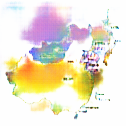
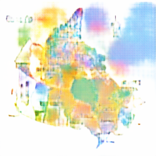
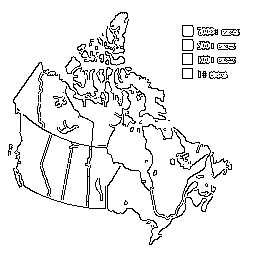
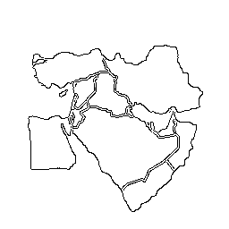
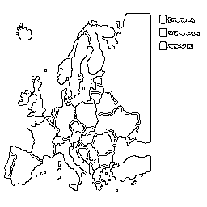
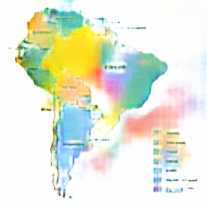
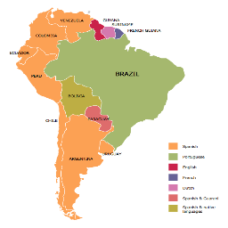

| Image # | Input | Output | Ground Truth |
| Continent-Maps-Central-Asia-Political-Map.png | | | |
| Continent-Maps-Map-of-South-America-Guiana.png | | | |
| Continent-Maps-Southern-Cone-Map.png | | | |
| Continent-Maps-Political-Map-of-the-Caucasus-and-Central-Asia.png |  | | |
| Geo-map-USA.png | | | |
| Geo-map-asia.png | | | |
| Continent-Maps-East-Asia-Map.png | |  | |
| Continent-Maps-Canada-Regions-Map.png |  |  | |
| Continent-Maps-2009-Flu-Pandemic-in-Canada.png |  | | |
| Continent-Maps-Australia-States-Timezones45.png | | |  |
| types-map.png | | | |
| nq2CE.png |  | | |
| Continent-Maps-Middle-East-Map.png |  | | |
| Continent-Maps-South-American-Color-Coded-Regions.png |  | | |
| Picture1.png | | |  |
| Continent-Maps-2012-US-Presidential-Election-Results.png | | |  |
| Continent-Maps-Maghreb-Countries-Map.png | | | |
| Continent-Maps-Map-of-Central-America.png | | | |
| Continent-Maps-EU-and-NATO.png |  | | |
| Continent-Maps-Languages-of-South-America.png | |  |  |
| Continent-Maps-South-America-Map.png | | | |
| Continent-Maps-Southwest-Asia-Map.png | | | |
| Continent-Maps-Andean-States-Map.png | | | |
| Continent-Maps-Canada-Political-Map.png | | | |
| Geo-map-America.png | | | |
| example-world-map-outline.png | | | |